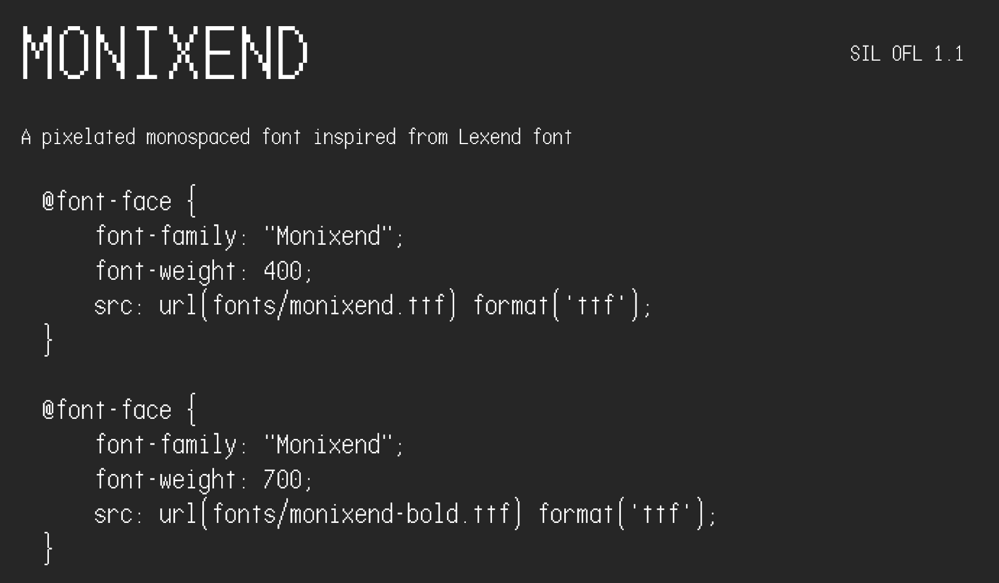

Last font update: 01/10/2026
(1 October 2026)
Are you using Lexend font? You should try Monixend! - It's one of monspaced font that pairs playfully with Lexend! Unlike most of Monospaced fonts, Monixend font uses the single storey "a", this similar style can also be found in the Colophon Foundy's Space Mono font.
"Monixend" is a pixelated monospaced font that designed to pair with "Lexend" fonts with playful/student-styled single storey "a", simple flat lowecase "t", modern flat top "3", and classic-styled closed "4". "Monixend" is the new version of "Ghea Code" with many optimizations. Unlike Lexend where the main focus is on the readability, Monixend is designed for coding purposes, and provides all entire vulgar fractions. Since Monixend font style is the combination between pixelated and monospaced, this font can actually used as the heading figures or either texts that actually intended as the monospaced font (like numbers that could change).
The Monixend fonts is licensed under SIL Open Font License 1.1 - you can use Monixend font at anywhere for personal or commercial purposes.
Fun fact: The name of "Monixend" is the shortened term form of "Monospaced Imitation of Lexend", winch is chosen to make the font name look related to Lexend font.For further questions, please open a new issue in GitHub.